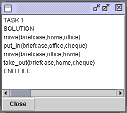

select "Forward" planner from the pull-down list. We recommend this planner as a default for classical domains.
Figure 1 Select an algorithm
Select task 1 from the GIPO Query window (Figure 2). After "OK" button has been clicked, a planning result will be shown as in Figure 3. The time this takes will depend on the difficulty of the task and the efficiency of the choosen planner. A "planner running" dialog will be shown during the planners attempt to find a solution. No guidance is given as to how long this will take. An option to terminate the running planner is given.
To view the results in a graphical form, the animator can be used to view the plan last produced.
Figure 2 Select a task

Figure 3 Planning result